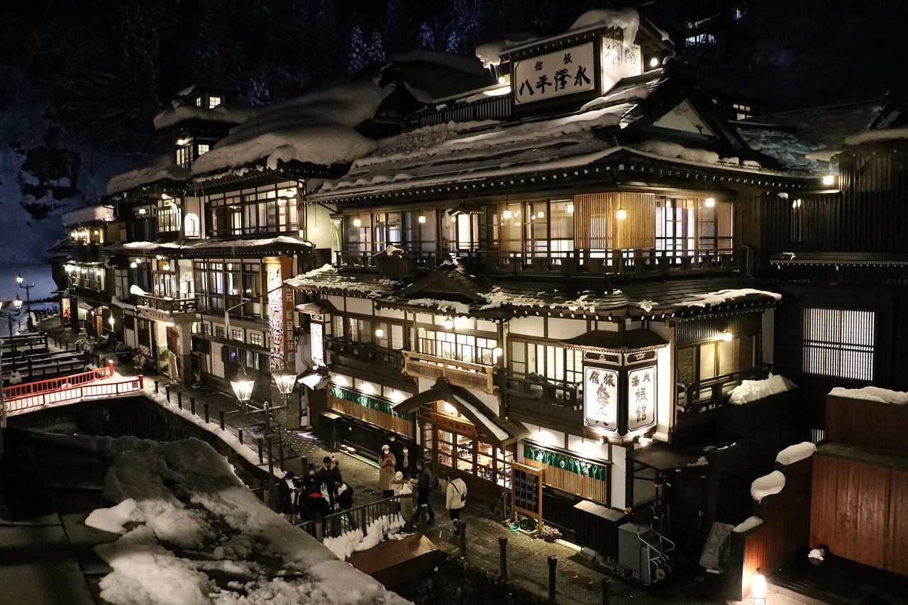

The ultimate luxury ryokan guide: best hot-spring stays near Mt. Fuji & Kyoto
Spending $500+ a night on a traditional ryokan is a bucket-list dream — but choosing the wrong one can mean a noisy buffet hall instead of a private zen garden. Here is how to pick a top-tier stay where private open-air baths (rotenburo), Michelin-quality Kaiseki dinners, and flawless omotenashi service are the standard, not the exception.

We don't run a hotel. We point you to the booking sites with the widest ryokan inventory and the clearest free-cancellation terms, and we tell you the etiquette that protects your trip. Compare rates on more than one site — luxury ryokan prices vary a lot by platform and season.
Some links on this page are affiliate links. We may earn a commission at no extra cost to you.
Pick by what you want most
Fuji Five Lakes & Hakone ryokan
Wake to the sunrise over Fuji from a private balcony bath. Hakone and the Kawaguchiko lakeside have the highest concentration of view-rooms — book a Fuji-facing room explicitly, since standard rooms often face the other way.
Machiya & garden ryokan in Kyoto
A 100-to-200-year-old wooden oasis tucked into the city — tatami suites, a kaiseki dinner served in-room, and a morning of temples on foot. Central Higashiyama and Gion stays cost more but save you hours of transit.
Beppu, Kusatsu & Gero hot-spring resorts
If the bath itself is the trip, stay in a dedicated onsen town. Many luxury rooms here come with their own private rotenburo, so you can soak any time without worrying about public-bath rules.
At a glance
| Area | Best for… | Typical luxury rate / night | Compare |
|---|---|---|---|
| Hakone / Kawaguchiko | Mt. Fuji views | $400–900 | Rates → |
| Kyoto (Higashiyama / Gion) | Historic city ryokan | $500–1,200 | Rates → |
| Beppu / Yufuin (Oita) | Private rotenburo rooms | $300–700 | Rates → |
Crucial ryokan tips before you book
- Tattoos: private in-room baths are 100% fine. If you want the shared bath, check the public-bath policy first — many luxury ryokan are fine, but not all.
- Dinner times: most luxury ryokan serve Kaiseki at a fixed 6:00 or 6:30 PM. Do not check in late, or you may miss the meal you paid for.
- Two-meal rates: the headline price usually includes dinner and breakfast (一泊二食). It looks expensive until you realize the food is included.
- Book the room type, not just the ryokan: "with private open-air bath" and "Fuji-facing" are separate room categories — select them explicitly.
Common questions
Q. Can I use a ryokan onsen if I have tattoos?
A. A private in-room rotenburo is 100% fine with tattoos. For a shared bath, check each ryokan public-bath policy first, since many luxury ryokan allow it but not all.
Q. What time is dinner at a luxury ryokan?
A. Most serve Kaiseki at a fixed 6:00 or 6:30 PM, so do not check in late or you may miss the multi-course meal you already paid for.
Q. Why do ryokan look so expensive?
A. The headline price is usually a two-meal rate (ippaku-nishoku) that includes both Kaiseki dinner and breakfast. Luxury rooms run about $300 to 700 in Beppu and Yufuin, up to $500 to 1,200 in central Kyoto.
Q. How do I guarantee a Mt. Fuji view or a private bath?
A. Book the room category, not just the ryokan. With private open-air bath and Fuji-facing are separate room types, because standard rooms often face away from the mountain.
Free prefecture guides for the best ryokan regions: Hakone / Kanagawa · Kawaguchiko / Yamanashi · Kyoto · Beppu & Yufuin / Oita.
How we choose: we favor booking platforms with broad ryokan inventory, real guest reviews, and transparent cancellation terms. Affiliate commissions never change our advice or your price.